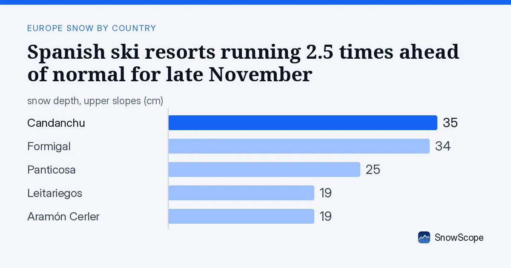
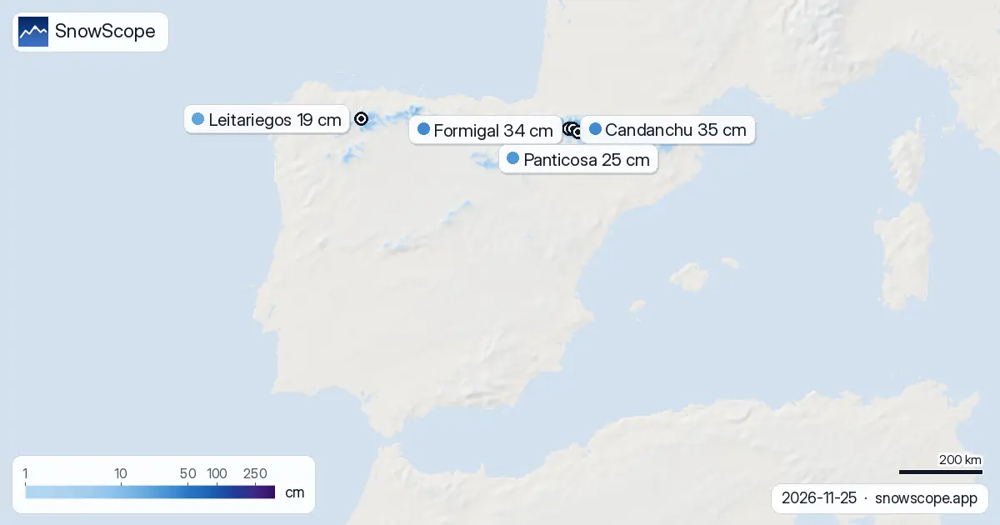

Spanish ski resorts running 2.5 times ahead of normal for late November
Spanish mountain resorts have jumped far ahead of their typical snow depth for late November. Candanchu, Formigal and Panticosa are all running between 1.8 and 5 times their normal cover, thanks to heavy snow in the past three days.
See the live snow forecast for Candanchu in the SnowScope appSnow depth, powder alerts and the 3D map, free.
How far ahead are Spanish resorts right now?
Candanchu sits at 35 cm today, nearly 2.5 times its usual 14 cm for this date. Formigal holds 34 cm (normally 19 cm at this time of year). Panticosa is especially well stocked: its 25 cm is five times the typical early-season depth of 5 cm. Even Aramón Cerler, the highest resort here, has 19 cm where 13 cm is usual.
A week ago, most of these resorts had almost no snow on the ground. The shift in the past seven days has been dramatic. The region-wide snow cover has jumped from 300 km² to nearly 16,000 km², and the Spanish Pyrenees have received up to 35 cm of fresh snow in 72 hours alone.
| Resort | Today | Normal for the date | Share of normal |
|---|---|---|---|
| Candanchu | 35 cm | 14 cm | 250 % |
| Formigal | 34 cm | 19 cm | 179 % |
| Panticosa | 25 cm | 5 cm | 500 % |
| Aramón Cerler | 19 cm | 13 cm | 146 % |

What is normal for late November in Spain?
November is a lean month in Spanish mountains. Most resorts sit on bare ground or thin patches until December arrives. At Panticosa, an average late-November day sees only 5 cm. Candanchu, one of the more reliable early-season spots, averages 14 cm. This year, the mountains have broken pattern.
The comparison matters because it tells us whether this snow is staying or melting fast. When you are well above normal at this date, the snow pack is building in a way that early-season skiers rarely see. It suggests colder-than-usual air across the high peaks and moisture that arrived early.

Where is the best snow across Spain today?
Three mountain zones stand out. The Spanish Pyrenees have collected the most: 35 cm in the past 72 hours, with Candanchu and Formigal both holding 34–35 cm. The Cantabrian Mountains to the northwest have added 26 cm in three days, while the Galician mountains (also 26 cm in 72 hours) are catching up fast.
Above 2000 m, the snow has real depth. The band from 2000 to 2500 m holds an average of 9 cm across the mapped region, with 83 per cent coverage. Higher still, from 2500 m upward, the average is 12 cm. Below 1500 m, the ground is mostly bare.
What comes next in the forecast?
More snow is on the way, though the falls will ease. Tomorrow, 26 November, is shaping up as the snowiest day of the week, with up to 15 cm possible in the highest zones. By the end of this week (through 28 November), expect 6–9 cm more. After that, the second week of December looks stronger: up to 25 cm is in the longer forecast for early December.
The Spanish Pyrenees and Cantabrian peaks should see the most of the next falls. Resorts like Candanchu and Formigal will benefit most. Lower resorts such as Leitariegos (at 1791 m) are forecast only 1 cm over the next three days, so their current 19 cm is valuable and may not grow much further this week.
Snow depth by altitude: where the coverage breaks down
The snow pack has a sharp height boundary. Between 1500 and 2000 m, coverage drops to 54 per cent and depth falls to 4 cm. Drop below 1500 m and you find almost nothing: 7 per cent coverage and 0 cm average depth. This is typical early season: the snow survives only on the high ground where the air is colder.
For skiers, this means the upper slopes and highest peaks are your target. At 2000 m and above, the snow is real and thick enough to ski on. Many Spanish resorts have their best terrain above this line, so the timing works in their favour.
How the week has built, and what it tells us
A week ago (18 November), Spain's mountains were almost bare: 530 km² of snow, mostly in tiny patches. By last Friday (22 November), a system brought the first real falls—up to 12 cm in some spots, though only 1490 km² were covered. Then came the heavy push: in just two days (24–25 November), the snow-covered area quintupled, from 2500 km² to 15,840 km². Candanchu emerged as the leader by 25 November with its 35 cm.
This kind of jump—from almost nothing to nearly 16,000 km² in a week—suggests strong, early-season weather. The mountains caught a system while the air was cold enough to make snow stick and accumulate. For a region as dry as Spain's high peaks, this is not routine.
Tips for skiers
- Head high: above 2000 m is where the snow is reliable right now. Lower slopes are thin or bare. Candanchu and Formigal offer the safest skiing today.
- Watch for the weather tomorrow (26 November). Up to 15 cm is forecast in the peaks—good news if you can reach the terrain above 2000 m before the sky clears.
- Be cautious on steep slopes: fresh snow on thin ground, especially in the 1500–2000 m band, may conceal rocks. Check the official avalanche bulletin before going off-piste.
- Plan for Leitariegos and lower resorts to stay thin through the week. If you are based there, the upper peaks of the Pyrenees and Cantabrians are worth the drive.
- Expect melt during the day if sun breaks through. Early-season snow in Spain is often light and fast to change. Ski early, stay high, and watch the aspect of the slope.
About these numbers
Resort snow depths are the deepest snow on the resort's upper slopes on the date shown; they are estimates for an area, not a measurement at one point. Forecasts can change. Always read the official avalanche bulletin before going off-piste.
Cite this report
For research, teaching or the press: the numbers and charts are free to reuse under CC BY 4.0 with this citation.
SnowScope (2026), Spanish ski resorts running 2.5 times ahead of normal for late November, https://snowscope.app/blog/en/2026/11/spain-snow-ahead-of-normal-25-november-2026.html, accessed 2026-11-25
SnowScope (Atlas Labs). (2026, November 25). Spanish ski resorts running 2.5 times ahead of normal for late November. SnowScope snow reports. https://snowscope.app/blog/en/2026/11/spain-snow-ahead-of-normal-25-november-2026.html
BibTeX
@misc{snowscope2026spainsnowaheadofnormal25,
author = {{SnowScope (Atlas Labs)}},
title = {Spanish ski resorts running 2.5 times ahead of normal for late November},
year = {2026},
month = nov,
howpublished = {\url{https://snowscope.app/blog/en/2026/11/spain-snow-ahead-of-normal-25-november-2026.html}},
note = {Published 2026-11-25 10:38 UTC; accessed 2026-11-25}
}· CC BY 4.0 · Methods, data and tools →
Candanchu: snow and temperature by height, this winter vs last (tools) →
Follow Candanchu
Free: a message when fresh snow is coming, and the forecast every morning.
More snow reports

Tornik on Zlatibor had up to 39 cm on its upper slopes on 15 November 2026; by Wednesday it had melted. Kopaonik barely turned white. The week day by day and what comes next.

Savin Kuk above Žabljak picked up 22 cm of snow from 13 to 19 November and still has 6 cm today. Kolašin 1450 and 1600 are bare. The week day by day, and the next chances.

Up to 30 cm of snow fell on northern Velebit and Bjelolasica on Friday 13 November 2026. By Tuesday it was gone. Day by day, what the mountains kept, and when snow comes back.